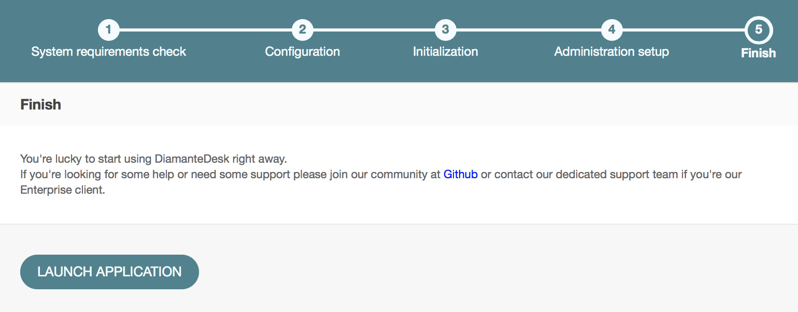

Installation Guide
DiamanteDesk may serve as an independent end-user application or as an extension for OroCRM. It will also be available for other CRMs in the nearest future.
This section provides detailed instructions on various options of DiamanteDesk application installation.
Requirements
DiamanteDesk application was built using Symfony 2.3 framework and Oro Platform; therefore, all the prerequisites listed as Symfony and Oro system requirements also refer to DiamanteDesk.
DiamanteDesk Requirements:
- app/attachments folder needs to be writable;
- DiamanteDesk uses Composer to manage package dependencies. To learn more about the composer and download it from the official website, follow this link;
- MySQL database server with an empty database.
Optionally, providing that your portal should be customized, your system shall comply with additional requirements:
- NPM package manager needs to be installed;
- Grunt needs to be installed (globally);
- Bower needs to be installed (globally).
You can also check whether your system meets all the requirements from the command line. In order to do that, you should start with getting the application code from Github and install required libraries. Next, run the following command:
php app/check.phpWeb Server configuration
DiamanteDesk application was developed on the basis of the Symfony standard application so you can learn more about web server configuration recommendations here.
Note: DiamanteDesk makes heavy use of HTTP methods in RESTful calls. The server can be configured to block some of them (for example, PUT, DELETE, etc.). However, this limitation should be removed, otherwise, a certain part of application will not function properly.
Email Notification Configuration
DiamanteDesk provides email notification functionality to automatically confirm user accounts, inform customers when new tickets are created or about any changes made to existing ones. This way a customer is notified whether his request is being processed.
To make sure this functionality works properly, pay attention to email notification configuration:
- When installing DiamanteDesk via the web wizard, fill out the Mailer Settings section of the Configuration step.
- If DiamanteDesk was installed through the console, provide the required configuration data at the
app/config/parameters.ymldirectory.
Installation of a Standalone Application
Step 1: Get the Stable Version of the Application
Three options to get the latest stable version are available:
Option 1: Using Git
git clone -b 1.0 https://github.com/eltrino/diamantedesk-applicationOption 2: With the composer package manager
php composer.phar create-project diamante/desk-applicationOption 3: Via a release archive
The release archive is built for every stable release and it comes with the so-called “batteries included” as all the requirements are already installed and all the resources are built. Simply download the package, unzip it to the web-accessible directory on your server and follow the installation steps described in the following section.
curl -O https://github.com/eltrino/diamantedesk-application/releases/download/2.0.0/diamantedesk-application-full-2.0.0.zipunzip diamantedesk-application.zipNote: Generally, we do not recommend using the last option and consider it to be a fallback option in case you have only FTP access to your server.
Learn how to get the latest development version of the application here.
Step 2: Install the Required Libraries
Install the dependencies with the composer:
php composer.phar installStep 3: Create a Database
To install DiamanteDesk you also need to setup MySQL database server with an empty database that will be used later on. Use the following command:
php app/console doctrine:database:createStep 4: Install the Application
The application can be installed either using a console or via a web wizard. Select the most suitable version:
Option 1: Installation Using a Console
To run the installation of DiamanteDesk in a console mode, use the following command:
php app/console diamante:installAdditional commands may be required. The system will guide you through the process with questions and command options.
If the system configuration does not meet the requirements, the install command provides corresponding messages. In case there are any issues, fix them and run the command again.
Option 2: Installation Using Web Wizard
To install the application through a web wizard, follow the link below:
http://localhost/install.phpAfter the DiamanteDesk installation screen opens, click Begin Installation.
Firstly, installation wizard automatically checks system requirements.
In case there are any issues, fix them and refresh the page. After all system configurations meet installation requirements, click Next.
The next step of installation process is configuring the application. Provide the data for MySQL database connection, Mailer settings, System settings and Websocket connection if the fields are not filled out automatically.
Note: If the application is installed for the first time, leave the Drop Full Database check box clear, if you reinstall the application, select this check box.
Click Next and the installer will initialize your database. The list of tasks and the progress on their performance will be shown. If some of the operations are failed or skipped, check out the app/logs/oro_install.log file for errors.
After you move on to the next step, you should provide such administrative information as company name, link to the application and administrative credentials.
Click Install to finish the setup process.
After the DiamanteDesk application is successfully installed the following message is displayed:

Background Job Configuration
DiamanteDesk requires that certain task should be executed in background. For this you will need to add several commands to your system job scheduler.
*/1 * * * * php app/console diamante:cron > /dev/nullThis will execute required command every minute. If you need you can change execution period to 5 minutes. This will decrease system reaction time to certain events (for example processing rules).
Also if you would like to use Email channel its required to add one of the commands described in this section to your system job scheduler.
Bundles Installation
Development in progress.
Oro Marketplace
To learn about installation of DiamanteDesk on the basis of OroCRM, please follow this link.
Docker Prebuilt Image
To learn more on how to use Docker image, please follow this link.
Latest Development Version
The latest development version of DiamanteDesk application is also available for download.
Disclaimer: Please keep in mind that this version is unstable and it may cause damage to your website or web store. We disclaim all responsibilitiy for data loss or any sorts of damage to your website or system caused by installation of the development version of application.
Select one of the following options to get the development version of application:
Option 1: Clone the GitHub repository to get the source code
git clone https://github.com/eltrino/diamantedesk-applicationOption 2: Download using the composer
php composer.phar create-project diamante/desk-application:dev-masterRegradless of the option you’ve chosen, next you need to install the required libraries to proceed with installation process:
php composer.phar installTo get the latest version of the dependencies, execute the following command:
php composer.phar update